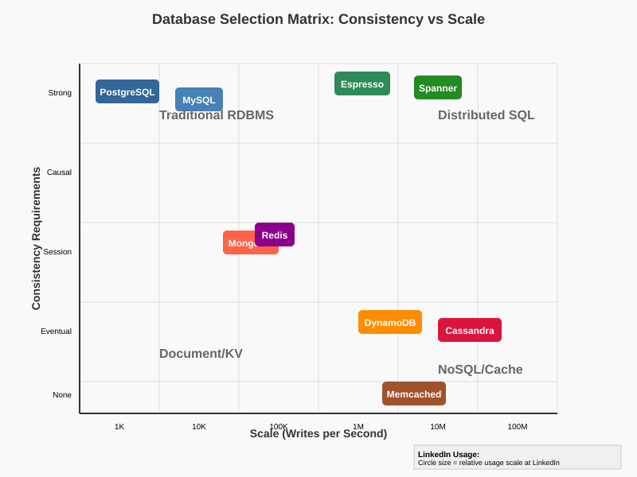

Comprehensive guide to choosing the right system for your architecture — databases, caching, messaging, storage, and more
LinkedIn Scale:
Key Principles:

| Aspect | B-Tree (e.g., PostgreSQL, MySQL InnoDB) | LSM Tree (e.g., Cassandra, LevelDB, RocksDB) | LinkedIn Espresso |
|---|---|---|---|
| Write Performance | Moderate (requires random I/O for updates) | Excellent (sequential writes to WAL + SSTable) | High (optimized LSM with compaction tuning) |
| Read Performance | Excellent (balanced tree, few disk seeks) | Good (may require multiple SSTable reads) | Very High (multi-level caching + bloom filters) |
| Space Amplification | Low (1.2-1.5x) | Higher (2-4x during compaction) | Optimized (1.8-2.2x with smart compaction) |
| Write Amplification | High (random updates) | Lower (sequential writes, compaction cycles) | Very Low (optimized compaction strategy) |
| Use Cases | OLTP, complex queries, transactions | Write-heavy workloads, time-series data | LinkedIn profiles, social graph, messaging |
Choose B-Tree when: Read-heavy workloads (>80% reads), complex queries with joins, ACID transactions, low storage budget, predictable access patterns
Choose LSM when: Write-heavy workloads (>60% writes), time-series data, high throughput requirements, can tolerate eventual consistency
Choose Espresso when: Need both high reads AND writes, multi-datacenter replication, 99.99% availability requirement, willing to pay LinkedIn engineering cost
Espresso: Stores member profiles (900M records), connection graphs, messaging data. Handles 4.8M reads/sec and 300K writes/sec with <10ms p99 latency across 6 datacenters. Chose over MySQL due to write scaling limits and over Cassandra due to strong consistency needs.
Trade-off: 3x higher operational complexity than managed MySQL, but enables 10x higher write throughput with strong consistency guarantees needed for profile updates.
| Database Type | Best Use Cases | LinkedIn Usage | Latency (p99) | Consistency Model | Cost ($/GB/month) |
|---|---|---|---|---|---|
| PostgreSQL | Complex queries, analytics, reporting | Billing, compliance data, analytics | 50-200ms | ACID | $2-8 |
| MySQL | Web apps, moderate scale, familiar SQL | Legacy systems, configuration management | 10-50ms | ACID | $1-4 |
| Espresso | High-scale OLTP, multi-region consistency | Member profiles, connections, messaging | 5-15ms | Strong | $15-25 |
| Cassandra | Time-series, write-heavy, multi-region | Activity streams, event logging, metrics | 20-100ms | Eventual | $3-6 |
| DynamoDB | Serverless apps, predictable access patterns | Session storage, feature flags | 5-25ms | Eventual | $5-12 |
| Redis | Caching, real-time analytics, sessions | Feed caching, real-time recommendations | 1-5ms | Eventually | $8-20 |
| System | Algorithm | Best Use Case | LinkedIn Usage | Performance | Operational Complexity |
|---|---|---|---|---|---|
| Apache ZooKeeper | ZAB (Zab Atomic Broadcast) | Service discovery, configuration, Kafka coordination | Kafka clusters, service registry, leader election | 10K ops/sec | High (Java, complex config) |
| etcd | Raft | Kubernetes, container orchestration, microservices | Kubernetes clusters, container config management | 30K ops/sec | Medium (Go, simpler operations) |
| Consul | Raft | Service mesh, multi-datacenter service discovery | Cross-datacenter service discovery, health checks | 25K ops/sec | Medium (service mesh integration) |
| Custom Raft | Raft | Application-specific consensus needs | TiDB coordination, custom distributed services | 50K+ ops/sec | Very High (custom implementation) |
Choose ZooKeeper when: Already using Kafka ecosystem, mature Java environment, need battle-tested reliability, can handle operational complexity
Choose etcd when: Kubernetes environment, need high performance, prefer Go ecosystem, want simpler operations than ZooKeeper
Choose Consul when: Multi-datacenter deployment, service mesh integration, need built-in health checking, HashiCorp ecosystem
Build Custom Raft when: Specific performance requirements, domain-specific needs, have expert distributed systems team
ZooKeeper: Kafka cluster coordination (500+ brokers), topic management, consumer group coordination. Handles 2M+ operations/day with 99.99% availability.
etcd: Kubernetes orchestration for 10K+ containers, service configuration management, feature flag coordination.
Custom Solutions: Espresso uses custom consensus for multi-master coordination, TiDB uses custom Raft implementation for distributed SQL.

| System | Throughput | Latency (p99) | Ordering Guarantees | Durability Model | LinkedIn Usage |
|---|---|---|---|---|---|
| Apache Kafka | 1M+ msgs/sec | 50-200ms | Per-partition ordering | Configurable replication | Activity streams, data pipelines, event sourcing |
| Apache Pulsar | 800K msgs/sec | 30-100ms | Per-key ordering | BookKeeper (3+ replicas) | Real-time analytics, ML feature pipelines |
| RabbitMQ | 100K msgs/sec | 10-50ms | Queue-based ordering | Configurable persistence | Job queues, microservice communication |
| Google Pub/Sub | 500K msgs/sec | 100-500ms | No ordering (unless ordered keys) | Regional replication | Cloud-based event processing |
| Amazon SQS | 300K msgs/sec | 200-1000ms | FIFO queues available | Regional replication | Serverless job processing |
Choose Kafka when: High-throughput data pipelines, event sourcing, stream processing, need partition-level ordering, long retention periods
Choose Pulsar when: Multi-tenant messaging, geo-replication, storage/compute separation, complex routing needs
Choose RabbitMQ when: Traditional job queues, complex routing, need immediate delivery, moderate scale
Choose Cloud Pub/Sub when: Serverless applications, managed operations, cloud-native, can tolerate higher latency
Kafka (Primary): 2000+ brokers processing 7 trillion messages/day. Used for member activity streams, A/B test data, ML feature pipelines. 99.99% availability with cross-datacenter replication.
Pulsar (Specialized): Real-time recommendation model updates, low-latency notification delivery. Chosen for multi-tenant isolation and better geo-replication than Kafka.
Cost Comparison: Kafka: $0.08/GB, Pulsar: $0.12/GB, RabbitMQ: $0.15/GB, Cloud Pub/Sub: $0.40/GB (at LinkedIn scale)
| System | Data Structures | Persistence | Clustering | Memory Efficiency | LinkedIn Use Case |
|---|---|---|---|---|---|
| Redis | Rich (lists, sets, hashes, streams) | RDB + AOF snapshots | Redis Cluster (16K slots) | Moderate (metadata overhead) | Feed caching, session storage, real-time analytics |
| Memcached | Key-value only | None (memory only) | Client-side sharding | Excellent (minimal overhead) | Profile page caching, API response caching |
| Hazelcast | Rich (distributed collections) | Configurable | Built-in clustering | Good (JVM-based) | Distributed computing, in-memory data grids |
| Coherence | Rich (Oracle proprietary) | Write-through/write-behind | Enterprise clustering | Good (optimized JVM) | Legacy Java applications, Oracle ecosystem |
Choose Redis when: Need rich data structures, pub/sub messaging, some persistence, Lua scripting, moderate complexity acceptable
Choose Memcached when: Pure key-value caching, maximum memory efficiency, simple operations, battle-tested reliability
Choose Hazelcast when: Java ecosystem, distributed computing needs, in-memory data grids, complex distributed algorithms
Choose Coherence when: Oracle-heavy environment, enterprise support requirements, complex caching patterns
Redis (Primary): 500+ Redis instances handling 4.8M ops/sec for feed caching, real-time recommendation scores, user session management. Average hit ratio: 97.2%
Memcached (Specific): Profile page fragment caching, static content caching. 2000+ instances with 98.5% hit ratio, chosen for memory efficiency
Performance Comparison: Redis: 80K ops/sec/instance, Memcached: 150K ops/sec/instance, but Redis provides richer functionality

| Storage Type | Sequential Read | Random IOPS | Latency | Cost/TB | LinkedIn Use Case |
|---|---|---|---|---|---|
| NVMe SSD | 3.5 GB/s | 500K+ IOPS | 0.1ms | $400-800 | Espresso hot data, Redis persistence, Kafka logs |
| SATA SSD | 550 MB/s | 100K IOPS | 0.2ms | $100-200 | MySQL data, search indices, warm cache tier |
| HDD (7200 RPM) | 200 MB/s | 200 IOPS | 10ms | $20-40 | Log archives, backup storage, cold analytics data |
| S3 Standard | Variable | 3500 GET/s | 50-200ms | $23 | Data lake, backup archives, infrequent access |
| HDFS | 1-10 GB/s | N/A (streaming) | 50-500ms | $30-60 | Data processing, analytics, ML training data |
| Engine | Latency | Throughput | State Management | Fault Tolerance | LinkedIn Usage |
|---|---|---|---|---|---|
| Apache Flink | 10-100ms | 1M+ events/sec | Managed state backends | Exactly-once with checkpoints | Real-time ML feature generation, fraud detection |
| Kafka Streams | 50-200ms | 500K events/sec | Local state stores | At-least-once default | Data enrichment, simple transformations |
| Apache Storm | 5-50ms | 1M+ tuples/sec | External state stores | At-least-once (complex exactly-once) | Legacy real-time analytics (being migrated) |
| Apache Samza | 100-500ms | 300K msgs/sec | Kafka-based state | Exactly-once with Kafka | Batch processing, data pipeline transformations |
Choose Flink when: Need lowest latency, complex event processing, stateful computations, exactly-once semantics critical
Choose Kafka Streams when: Already heavy Kafka users, simple stream processing, want to avoid separate cluster management
Choose Storm when: Need ultra-low latency, simple processing logic, can handle at-least-once complexity
Choose Samza when: LinkedIn-style data pipelines, batch-like stream processing, tight Kafka integration
| Workload Pattern | Read/Write Ratio | Consistency Needs | Scale Requirements | Recommended System | LinkedIn Example |
|---|---|---|---|---|---|
| User Profiles | 80% read, 20% write | Strong consistency | 900M records, 100K writes/sec | Espresso + Redis cache | Member profile data with feed caching |
| Activity Streams | 10% read, 90% write | Eventual consistency OK | Billions of events/day | Kafka + Cassandra | Member activity feeds, interaction tracking |
| Real-time Analytics | 50% read, 50% write | Eventual consistency | Millions of metrics/min | Flink + Redis + ClickHouse | Who viewed your profile, content engagement |
| Search Indices | 95% read, 5% write | Eventual consistency | Billions of documents | Elasticsearch + S3 | Job search, people search, content search |
| Configuration/Metadata | 70% read, 30% write | Strong consistency | Small datasets, high availability | etcd/ZooKeeper | Feature flags, service discovery, A/B test config |
| Time-Series Metrics | 30% read, 70% write | Eventual consistency | Billions of data points | InfluxDB/TimescaleDB | Application metrics, performance monitoring |
Hot Data Path (High Cost, Low Latency):
Warm Data Path (Medium Cost, Medium Latency):
Cold Data Path (Low Cost, High Latency):
Database Systems:
Messaging Systems:
Caching Systems:
Storage Systems:
| System | Replication Type | Recovery Time (RTO) | Data Loss (RPO) | LinkedIn Implementation |
|---|---|---|---|---|
| Espresso | Master-Master + Async slaves | < 30 seconds | Zero (synchronous) | 3 masters across datacenters, 6 read replicas |
| MySQL | Master-Slave async | 2-5 minutes | < 60 seconds | Hot standby with semi-sync replication |
| Cassandra | Multi-master eventually consistent | Immediate (no failover) | Zero (multi-replica) | RF=3 across availability zones |
| Kafka | Leader-follower per partition | < 30 seconds | Zero (acks=all) | 3 replicas, min.insync.replicas=2 |
| Redis | Master-Slave async | 5-30 seconds | < 1 second | Redis Sentinel with 3 masters, 6 slaves |
Database Anti-patterns:
Messaging Anti-patterns:
ARCHITECTURE SELECTION DECISION TREE
Start Here: What's your primary use case?
│
├─ TRANSACTIONAL DATA (OLTP) ──┐
│ │ │
│ ├─ <100K writes/sec ────────→ PostgreSQL/MySQL + read replicas
│ ├─ >100K writes/sec ────────→ Sharded MySQL or Espresso
│ └─ >500K writes/sec ────────→ Espresso or Cassandra
│
├─ ANALYTICAL DATA (OLAP) ──┐
│ │ │
│ ├─ Interactive queries ──→ ClickHouse/BigQuery
│ ├─ Batch processing ─────→ Spark + HDFS/S3
│ └─ Real-time analytics ──→ Flink + Kafka + ClickHouse
│
├─ CACHING ──┐
│ │ │
│ ├─ Simple key-value ─────→ Memcached
│ ├─ Rich data structures ─→ Redis
│ └─ Distributed cache ────→ Hazelcast
│
├─ MESSAGING ──┐
│ │ │
│ ├─ High throughput ──────→ Kafka
│ ├─ Low latency ──────────→ RabbitMQ/Redis Streams
│ └─ Cloud-native ─────────→ Google Pub/Sub/AWS SQS
│
└─ FILE STORAGE ──┐
│ │
├─ Hot data ───→ NVMe SSD
├─ Warm data ──→ SATA SSD
├─ Cold data ──→ HDD/S3
└─ Archive ────→ S3 Glacier/Tape